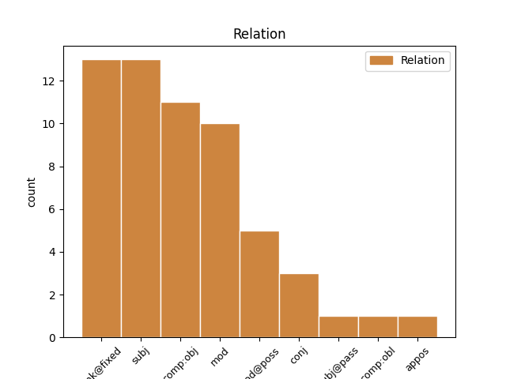

Distribution of features within this leaf

Agreement Rules sorted by frequency.
- When the dependent token is the unk@fixed(unk@fixed) of the head token, and the head token is PRON and the dependent token is PRON.
1 There _ _ _ _ 0 _ _ _
2 was _ _ _ _ 0 _ _ _
3 nothing _ _ _ _ 0 _ _ _
4 left _ _ _ _ 0 _ _ _
5 in _ _ _ _ 0 _ _ _
6 the _ _ _ _ 0 _ _ _
7 room _ _ _ _ 0 _ _ _
8 but _ _ _ _ 0 _ _ _
9 she _ _ _ _ 0 _ _ _
10 and _ _ _ _ 0 _ _ _
11 me _ _ _ _ 0 _ _ _
12 , _ _ _ _ 0 _ _ _
13 she _ _ _ _ 0 _ _ _
14 and _ _ _ _ 0 _ _ _
15 me _ _ _ _ 0 _ _ _
16 hypnotised _ _ _ _ 0 _ _ _
17 by _ _ _ _ 0 _ _ _
18 each each PRON RCP-SG-ACC Case=Nom 0 _ _ _
19 other other PRON RCP-SG-ACC Case=Nom 18 unk@fixed _ SpaceAfter=No
20 , _ _ _ _ 0 _ _ _
21 unable _ _ _ _ 0 _ _ _
22 to _ _ _ _ 0 _ _ _
23 speak _ _ _ _ 0 _ _ _
24 because _ _ _ _ 0 _ _ _
25 of _ _ _ _ 0 _ _ _
26 the _ _ _ _ 0 _ _ _
27 wind _ _ _ _ 0 _ _ _
28 . _ _ _ _ 0 _ _ _
1 My _ _ _ _ 0 _ _ _
2 grandmother _ _ _ _ 0 _ _ _
3 , _ _ _ _ 0 _ _ _
4 who _ _ _ _ 0 _ _ _
5 was _ _ _ _ 0 _ _ _
6 firmly _ _ _ _ 0 _ _ _
7 convinced _ _ _ _ 0 _ _ _
8 by _ _ _ _ 0 _ _ _
9 the _ _ _ _ 0 _ _ _
10 Word _ _ _ _ 0 _ _ _
11 of _ _ _ _ 0 _ _ _
12 the _ _ _ _ 0 _ _ _
13 Lord _ _ _ _ 0 _ _ _
14 , _ _ _ _ 0 _ _ _
15 took _ _ _ _ 0 _ _ _
16 more _ _ _ _ 0 _ _ _
17 pleasure _ _ _ _ 0 _ _ _
18 in _ _ _ _ 0 _ _ _
19 that _ _ _ _ 0 _ _ _
20 hour _ _ _ _ 0 _ _ _
21 than _ _ _ _ 0 _ _ _
22 in _ _ _ _ 0 _ _ _
23 any _ _ _ _ 0 _ _ _
24 other _ _ _ _ 0 _ _ _
25 of _ _ _ _ 0 _ _ _
26 the _ _ _ _ 0 _ _ _
27 week _ _ _ _ 0 _ _ _
28 , _ _ _ _ 0 _ _ _
29 including _ _ _ _ 0 _ _ _
30 2 _ _ _ _ 0 _ _ _
31 p.m. _ _ _ _ 0 _ _ _
32 Thursday _ _ _ _ 0 _ _ _
33 when _ _ _ _ 0 _ _ _
34 she she PRON PERS-SG-NOM Case=Nom|Gender=Fem|Number=Sing|Person=3|PronType=Prs 35 subj _ _
35 drew draw VERB PAST Case=Nom 0 _ _ _
36 her _ _ _ _ 0 _ _ _
37 pension _ _ _ _ 0 _ _ _
38 . _ _ _ _ 0 _ _ _
1 Flames _ _ _ _ 0 _ _ _
2 glided _ _ _ _ 0 _ _ _
3 in _ _ _ _ 0 _ _ _
4 the _ _ _ _ 0 _ _ _
5 river _ _ _ _ 0 _ _ _
6 , _ _ _ _ 0 _ _ _
7 small _ _ _ _ 0 _ _ _
8 green _ _ _ _ 0 _ _ _
9 flames _ _ _ _ 0 _ _ _
10 , _ _ _ _ 0 _ _ _
11 red _ _ _ _ 0 _ _ _
12 flames _ _ _ _ 0 _ _ _
13 , _ _ _ _ 0 _ _ _
14 white _ _ _ _ 0 _ _ _
15 flames _ _ _ _ 0 _ _ _
16 , _ _ _ _ 0 _ _ _
17 pursuing _ _ _ _ 0 _ _ _
18 , _ _ _ _ 0 _ _ _
19 overtaking _ _ _ _ 0 _ _ _
20 , _ _ _ _ 0 _ _ _
21 joining _ _ _ _ 0 _ _ _
22 , _ _ _ _ 0 _ _ _
23 crossing cross VERB ING Case=Nom 0 _ _ _
24 each each PRON RCP-SG-ACC Case=Nom 23 comp:obj _ _
25 other _ _ _ _ 0 _ _ _
26 – _ _ _ _ 0 _ _ _
27 then _ _ _ _ 0 _ _ _
28 separating _ _ _ _ 0 _ _ _
29 slowly _ _ _ _ 0 _ _ _
30 or _ _ _ _ 0 _ _ _
31 hastily _ _ _ _ 0 _ _ _
32 . _ _ _ _ 0 _ _ _
1 It _ _ _ _ 0 _ _ _
2 had _ _ _ _ 0 _ _ _
3 known _ _ _ _ 0 _ _ _
4 and _ _ _ _ 0 _ _ _
5 served _ _ _ _ 0 _ _ _
6 all _ _ _ _ 0 _ _ _
7 the _ _ _ _ 0 _ _ _
8 men _ _ _ _ 0 _ _ _
9 of _ _ _ _ 0 _ _ _
10 whom _ _ _ _ 0 _ _ _
11 the _ _ _ _ 0 _ _ _
12 nation _ _ _ _ 0 _ _ _
13 is _ _ _ _ 0 _ _ _
14 proud _ _ _ _ 0 _ _ _
15 , _ _ _ _ 0 _ _ _
16 from _ _ _ _ 0 _ _ _
17 Sir _ _ _ _ 0 _ _ _
18 Francis _ _ _ _ 0 _ _ _
19 Drake _ _ _ _ 0 _ _ _
20 to _ _ _ _ 0 _ _ _
21 Sir _ _ _ _ 0 _ _ _
22 John _ _ _ _ 0 _ _ _
23 Franklin _ _ _ _ 0 _ _ _
24 , _ _ _ _ 0 _ _ _
25 knights knight NOUN PL-NOM Case=Nom 0 _ _ _
26 all all PRON TOT-PL Case=Nom 25 subj _ SpaceAfter=No
27 , _ _ _ _ 0 _ _ _
28 titled _ _ _ _ 0 _ _ _
29 and _ _ _ _ 0 _ _ _
30 untitled _ _ _ _ 0 _ _ _
31 – _ _ _ _ 0 _ _ _
32 the _ _ _ _ 0 _ _ _
33 great _ _ _ _ 0 _ _ _
34 knights-errant _ _ _ _ 0 _ _ _
35 of _ _ _ _ 0 _ _ _
36 the _ _ _ _ 0 _ _ _
37 sea _ _ _ _ 0 _ _ _
38 . _ _ _ _ 0 _ _ _
1 We we PRON PERS-P1PL-NOM Case=Nom|Number=Plur|Person=1|PronType=Prs 0 _ _ _
2 all all PRON TOT-PL Case=Nom 1 mod _ _
3 know _ _ _ _ 0 _ _ _
4 that _ _ _ _ 0 _ _ _
5 the _ _ _ _ 0 _ _ _
6 market _ _ _ _ 0 _ _ _
7 share _ _ _ _ 0 _ _ _
8 of _ _ _ _ 0 _ _ _
9 the _ _ _ _ 0 _ _ _
10 railways _ _ _ _ 0 _ _ _
11 has _ _ _ _ 0 _ _ _
12 declined _ _ _ _ 0 _ _ _
13 in _ _ _ _ 0 _ _ _
14 recent _ _ _ _ 0 _ _ _
15 years _ _ _ _ 0 _ _ _
16 . _ _ _ _ 0 _ _ _
1 He _ _ _ _ 0 _ _ _
2 smoked _ _ _ _ 0 _ _ _
3 a _ _ _ _ 0 _ _ _
4 cigarette _ _ _ _ 0 _ _ _
5 , _ _ _ _ 0 _ _ _
6 and _ _ _ _ 0 _ _ _
7 then _ _ _ _ 0 _ _ _
8 another another PRON ADJ-SG Case=Nom 0 _ _ _
9 , _ _ _ _ 0 _ _ _
10 and _ _ _ _ 0 _ _ _
11 then _ _ _ _ 0 _ _ _
12 another another PRON ADJ-SG Case=Nom 8 conj _ SpaceAfter=No
13 . _ _ _ _ 0 _ _ _
1 I I PRON PERS-P1SG-NOM Case=Nom|Number=Sing|Person=1|PronType=Prs 2 subj@pass _ _
2 fancy fancy VERB PASS Case=Nom 0 _ _ _
3 I _ _ _ _ 0 _ _ _
4 see _ _ _ _ 0 _ _ _
5 it _ _ _ _ 0 _ _ _
6 now _ _ _ _ 0 _ _ _
7 , _ _ _ _ 0 _ _ _
8 but _ _ _ _ 0 _ _ _
9 I _ _ _ _ 0 _ _ _
10 am _ _ _ _ 0 _ _ _
11 not _ _ _ _ 0 _ _ _
12 sure _ _ _ _ 0 _ _ _
13 – _ _ _ _ 0 _ _ _
14 not _ _ _ _ 0 _ _ _
15 at _ _ _ _ 0 _ _ _
16 all _ _ _ _ 0 _ _ _
17 . _ _ _ _ 0 _ _ _
1 Do _ _ _ _ 0 _ _ _
2 you _ _ _ _ 0 _ _ _
3 not _ _ _ _ 0 _ _ _
4 think _ _ _ _ 0 _ _ _
5 some some PRON IND Case=Nom 0 _ _ _
6 of _ _ _ _ 0 _ _ _
7 them _ _ _ _ 0 _ _ _
8 , _ _ _ _ 0 _ _ _
9 not _ _ _ _ 0 _ _ _
10 all all PRON TOT-PL Case=Nom 5 appos _ SpaceAfter=No
11 , _ _ _ _ 0 _ _ _
12 are _ _ _ _ 0 _ _ _
13 getting _ _ _ _ 0 _ _ _
14 too _ _ _ _ 0 _ _ _
15 big _ _ _ _ 0 _ _ _
16 for _ _ _ _ 0 _ _ _
17 their _ _ _ _ 0 _ _ _
18 boots _ _ _ _ 0 _ _ _
19 . _ _ _ _ 0 _ _ _
1 Just _ _ _ _ 0 _ _ _
2 last _ _ _ _ 0 _ _ _
3 night _ _ _ _ 0 _ _ _
4 we _ _ _ _ 0 _ _ _
5 were _ _ _ _ 0 _ _ _
6 saying _ _ _ _ 0 _ _ _
7 we we PRON PERS-P1PL-NOM Case=Nom|Number=Plur|Person=1|PronType=Prs 8 subj _ SpaceAfter=No
8 'd will AUX PAST Case=Nom 0 _ _ _
9 come _ _ _ _ 0 _ _ _
10 and _ _ _ _ 0 _ _ _
11 get _ _ _ _ 0 _ _ _
12 you _ _ _ _ 0 _ _ _
13 ourselves _ _ _ _ 0 _ _ _
14 if _ _ _ _ 0 _ _ _
15 you _ _ _ _ 0 _ _ _
16 had _ _ _ _ 0 _ _ _
17 n't _ _ _ _ 0 _ _ _
18 written _ _ _ _ 0 _ _ _
19 back _ _ _ _ 0 _ _ _
20 to _ _ _ _ 0 _ _ _
21 Ron _ _ _ _ 0 _ _ _
22 by _ _ _ _ 0 _ _ _
23 Friday _ _ _ _ 0 _ _ _
24 . _ _ _ _ 0 _ _ _
Disagree Examples:
1 It _ _ _ _ 0 _ _ _
2 pleased please VERB PAST Case=Nom 0 _ _ _
3 him he PRON PERS-P3SG-ACC Case=Acc|Gender=Masc|Number=Sing|Person=3|PronType=Prs 2 comp:obj _ _
4 to _ _ _ _ 0 _ _ _
5 watch _ _ _ _ 0 _ _ _
6 it _ _ _ _ 0 _ _ _
7 leave _ _ _ _ 0 _ _ _
8 his _ _ _ _ 0 _ _ _
9 mouth _ _ _ _ 0 _ _ _
10 in _ _ _ _ 0 _ _ _
11 gusts _ _ _ _ 0 _ _ _
12 , _ _ _ _ 0 _ _ _
13 disperse _ _ _ _ 0 _ _ _
14 , _ _ _ _ 0 _ _ _
15 and _ _ _ _ 0 _ _ _
16 take _ _ _ _ 0 _ _ _
17 on _ _ _ _ 0 _ _ _
18 new _ _ _ _ 0 _ _ _
19 definition _ _ _ _ 0 _ _ _
20 as _ _ _ _ 0 _ _ _
21 the _ _ _ _ 0 _ _ _
22 light _ _ _ _ 0 _ _ _
23 caught _ _ _ _ 0 _ _ _
24 it _ _ _ _ 0 _ _ _
25 . _ _ _ _ 0 _ _ _
1 At _ _ _ _ 0 _ _ _
2 the _ _ _ _ 0 _ _ _
3 same _ _ _ _ 0 _ _ _
4 time _ _ _ _ 0 _ _ _
5 , _ _ _ _ 0 _ _ _
6 it _ _ _ _ 0 _ _ _
7 pleased please VERB PAST Case=Nom 0 _ _ _
8 him he PRON PERS-P3SG-ACC Case=Acc|Gender=Masc|Number=Sing|Person=3|PronType=Prs 7 comp:obj _ _
9 to _ _ _ _ 0 _ _ _
10 know _ _ _ _ 0 _ _ _
11 that _ _ _ _ 0 _ _ _
12 Stillman _ _ _ _ 0 _ _ _
13 also _ _ _ _ 0 _ _ _
14 had _ _ _ _ 0 _ _ _
15 a _ _ _ _ 0 _ _ _
16 red _ _ _ _ 0 _ _ _
17 notebook _ _ _ _ 0 _ _ _
18 , _ _ _ _ 0 _ _ _
19 as _ _ _ _ 0 _ _ _
20 if _ _ _ _ 0 _ _ _
21 this _ _ _ _ 0 _ _ _
22 formed _ _ _ _ 0 _ _ _
23 a _ _ _ _ 0 _ _ _
24 secret _ _ _ _ 0 _ _ _
25 link _ _ _ _ 0 _ _ _
26 between _ _ _ _ 0 _ _ _
27 them _ _ _ _ 0 _ _ _
28 . _ _ _ _ 0 _ _ _
1 By _ _ _ _ 0 _ _ _
2 flooding flood VERB ING Case=Nom 0 _ _ _
3 himself he PRON RFL-P3SG Case=Acc|Gender=Masc|Number=Sing|Person=3|PronType=Prs|Reflex=Yes 2 comp:obj _ _
4 with _ _ _ _ 0 _ _ _
5 externals _ _ _ _ 0 _ _ _
6 , _ _ _ _ 0 _ _ _
7 by _ _ _ _ 0 _ _ _
8 drowning _ _ _ _ 0 _ _ _
9 himself _ _ _ _ 0 _ _ _
10 out _ _ _ _ 0 _ _ _
11 of _ _ _ _ 0 _ _ _
12 himself _ _ _ _ 0 _ _ _
13 , _ _ _ _ 0 _ _ _
14 he _ _ _ _ 0 _ _ _
15 had _ _ _ _ 0 _ _ _
16 managed _ _ _ _ 0 _ _ _
17 to _ _ _ _ 0 _ _ _
18 exert _ _ _ _ 0 _ _ _
19 some _ _ _ _ 0 _ _ _
20 small _ _ _ _ 0 _ _ _
21 degree _ _ _ _ 0 _ _ _
22 of _ _ _ _ 0 _ _ _
23 control _ _ _ _ 0 _ _ _
24 over _ _ _ _ 0 _ _ _
25 his _ _ _ _ 0 _ _ _
26 fits _ _ _ _ 0 _ _ _
27 of _ _ _ _ 0 _ _ _
28 despair _ _ _ _ 0 _ _ _
29 . _ _ _ _ 0 _ _ _
1 In _ _ _ _ 0 _ _ _
2 fact _ _ _ _ 0 _ _ _
3 , _ _ _ _ 0 _ _ _
4 he he PRON PERS-P3SG-NOM Case=Nom|Gender=Masc|Number=Sing|Person=3|PronType=Prs 0 _ _ _
5 orchestrated _ _ _ _ 0 _ _ _
6 the _ _ _ _ 0 _ _ _
7 whole _ _ _ _ 0 _ _ _
8 thing _ _ _ _ 0 _ _ _
9 himself he PRON RFL-P3SG Case=Acc|Gender=Masc|Number=Sing|Person=3|PronType=Prs|Reflex=Yes 4 mod _ SpaceAfter=No
10 . _ _ _ _ 0 _ _ _
1 The _ _ _ _ 0 _ _ _
2 wife _ _ _ _ 0 _ _ _
3 smiled _ _ _ _ 0 _ _ _
4 her she PRON P3SG-GEN Case=Acc|Gender=Fem|Number=Sing|Person=3|PronType=Prs 5 mod@poss _ _
5 smile smile NOUN SG-NOM Case=Nom 0 _ _ _
6 , _ _ _ _ 0 _ _ _
7 said _ _ _ _ 0 _ _ _
8 she _ _ _ _ 0 _ _ _
9 was _ _ _ _ 0 _ _ _
10 glad _ _ _ _ 0 _ _ _
11 to _ _ _ _ 0 _ _ _
12 meet _ _ _ _ 0 _ _ _
13 Quinn _ _ _ _ 0 _ _ _
14 as _ _ _ _ 0 _ _ _
15 though _ _ _ _ 0 _ _ _
16 she _ _ _ _ 0 _ _ _
17 meant _ _ _ _ 0 _ _ _
18 it _ _ _ _ 0 _ _ _
19 , _ _ _ _ 0 _ _ _
20 and _ _ _ _ 0 _ _ _
21 then _ _ _ _ 0 _ _ _
22 extended _ _ _ _ 0 _ _ _
23 her _ _ _ _ 0 _ _ _
24 hand _ _ _ _ 0 _ _ _
25 to _ _ _ _ 0 _ _ _
26 him _ _ _ _ 0 _ _ _
27 . _ _ _ _ 0 _ _ _